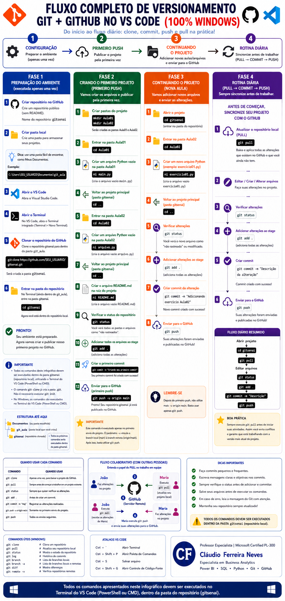

Competência da Unidade Curricular
Todo trabalho profissional com dados é versionado e organizado em um ambiente local — não só no navegador. Esta semana você formaliza esses dois pilares.
Objetivos da Semana
- Entender os conceitos de commit, branch, merge e Pull Request
- Compreender um fluxo de trabalho simplificado com Git/GitHub (GitFlow)
- Instalar e configurar um ambiente Python local (Python + VS Code)
- Criar e manipular listas, tuplas e dicionários
🟢 Abertura — Semana 03: Versionamento e Python Local
Nas semanas 01–02 você aprendeu a programar no Colab. Hoje você aprende a não perder seu trabalho e a trabalhar com Python instalado na sua máquina.
O que você vai aprender hoje:
- Usar Git e GitHub para versionar seu código e colaborar com outros
- Instalar Python e VS Code para trabalhar localmente
- Trabalhar com listas, tuplas e dicionários — as estruturas de dados essenciais
1. Configurando seu Ambiente de Desenvolvimento
Antes de entender como o Git funciona, você precisa das ferramentas instaladas na sua máquina. Esta seção mostra como instalar o Python, o VS Code e o Git — os três pilares do ambiente local de um profissional de dados.
- Baixar instalador
- Marcar Add to PATH
- Verificar no terminal
- Baixar instalador
- Marcar tarefas extras
- Instalar extensões
- Baixar instalador
- Configurar editor + main
- Registrar identidade
- python --version
- pip --version
- code --version
- git --version
Parte A — Instalar o Python
Baixe o instalador oficial
🔗 python.org/downloads/windowsNa página, clique em "Windows installer (64-bit)" da versão mais recente do Python 3.
.exe) aparece na barra de downloads do seu navegador — geralmente no canto superior ou inferior da tela. Clique nele para abrir, ou acesse a pasta Downloads pelo Explorador de Arquivos.Execute o instalador — marque "Add to PATH" primeiro
Select Install Now or Customize installation:
Com a opção marcada, clique em Install Now, aguarde e clique em Close.
Verifique no terminal (Prompt de Comando)
O terminal — também chamado de Prompt de Comando — é uma janela de texto onde você digita comandos diretamente para o computador. Para abrir: pressione a tecla ⊞ Win (a tecla com o logotipo do Windows, no canto inferior esquerdo do teclado) + R, digite cmd e pressione Enter. Uma janela preta vai abrir — é o terminal. Dentro dela, rode:
python --version pip --version
Python 3.12.x pip 24.x.x from C:\Users\...\Python312\Lib\site-packages\pip (python 3.12)
Parte B — Instalar o VS Code
Baixe o instalador para Windows 64-bit
🔗 code.visualstudio.com/downloadNa página de download, você vai ver botões para diferentes sistemas. Clique em Windows e baixe o User Installer x64. User Installer = instala só para o seu usuário (não precisa de senha de administrador). x64 = versão de 64 bits, adequada para a maioria dos computadores atuais. O arquivo baixado se chama VSCodeUserSetup-x64-x.xx.x.exe.
Execute o instalador — marque todas as tarefas adicionais
Nas primeiras telas: marque a opção "I accept the agreement" (aceito o contrato) e clique em Next → Next → Next. Na tela "Tarefas Adicionais":
Selecionar Tarefas Adicionais
Clique em Próximo → Instalar → Concluir. Deixe "Iniciar o Visual Studio Code" marcado.
Conheça a interface e instale as extensões
Ao abrir o VS Code, você vai ver uma barra lateral de ícones no lado esquerdo — é a "Activity Bar". Cada ícone abre um painel diferente:
quebra-cabeça 🧩
ou pressione
Ctrl + Shift + X
Como instalar uma extensão (passo a passo para qualquer uma):
- Abra o painel Extensions (Ctrl+Shift+X ou clique em 🧩)
- Clique na barra de busca e digite o nome da extensão
- Nos resultados, confirme o nome do autor (está escrito embaixo do título)
- Clique no botão azul Install
- Aguarde — quando o botão mudar para Uninstall, a extensão está instalada ✓
Extensões obrigatórias — instale estas duas primeiro:
.py com o botão ▶, ativa o IntelliSense (autocompletar) e mostra erros enquanto você digita..ipynb diretamente no VS Code — o mesmo formato que usamos no Google Colab.Extensões recomendadas — facilitam muito o dia a dia no curso:
.py cobra amarela, .ipynb laranja. Muito mais fácil de achar o arquivo certo.if, for, def, etc. Evita boa parte dos erros de IndentationError..csv com uma cor diferente. Quando chegarmos na semana de Pandas e abrirmos datasets, essa extensão vai salvar muito tempo..pdf diretamente dentro do VS Code — sem precisar trocar de programa. Útil para consultar documentações, rubricas e enunciados de atividades sem sair do editor.Com as extensões instaladas, conecte o VS Code ao Python que você instalou:
- Pressione Ctrl + Shift + P para abrir a Paleta de Comandos (uma barra de busca no topo da tela)
- Comece a digitar
select interpretere clique em Python: Select Interpreter - Na lista que aparecer, clique em
Python 3.x.x— é o Python que você instalou na Parte A
Parte C — Instalar o Git
Baixe o Git para Windows
🔗 git-scm.com/download/winO download começa automaticamente. Se não começar em alguns segundos, procure na página o link "64-bit Git for Windows Setup" e clique nele. O arquivo baixado (Git-x.xx.x-64-bit.exe) aparece na barra de downloads do navegador — clique para abrir.
Duas opções importantes durante o instalador
A maioria das telas pode ficar no padrão. Preste atenção nestas duas:
Which editor would you like Git to use?
⚠️ No instalador real essa opção é um menu suspenso (dropdown) — clique nele e role para baixo até encontrar "Use Visual Studio Code as Git's default editor".
What should the default branch be called?
main como nome padrão desde 2020. Configurar o mesmo nome no Git local evita divergências na hora de fazer push para o GitHub.
Nas demais telas, deixe os padrões selecionados e clique em Next → Install → Finish.
Configure sua identidade no Git
O Git precisa saber quem é você para assinar os commits. Abra o terminal do VS Code (menu Terminal → New Terminal, ou pressione Ctrl + `) e rode os dois comandos abaixo, substituindo pelo seu nome e e-mail:
git config --global user.name "Maria Silva" git config --global user.email "maria.silva@email.com"
Troque "Maria Silva" pelo seu nome completo e "maria.silva@email.com" pelo seu e-mail real.
Após rodar os dois comandos, o terminal vai mostrar só o cursor piscando — isso é normal, significa que funcionou. Para confirmar, rode:
git config --global user.name git config --global user.email
O terminal vai exibir o nome e e-mail que você digitou. Se estiverem corretos, está tudo certo.
Verificação final — tudo instalado?
No terminal do VS Code (Ctrl + `), rode os quatro comandos:
python --version # Python 3.x.x pip --version # pip 24.x.x code --version # x.xx.x (VS Code) git --version # git version 2.x.x.windows.x
Se os quatro responderem com versões, o ambiente está pronto. Agora faça um teste rápido:
- No VS Code, clique em File → New File… (ou pressione Ctrl + N)
- Salve o arquivo com Ctrl + S — vai abrir uma janela de "Salvar como". No painel esquerdo clique em Downloads, no campo de nome do arquivo apague o que estiver escrito e digite
teste.py, depois clique em Salvar - Digite na área branca:
print("Ambiente OK!") - Clique no botão ▶ Run Python File no canto superior direito do VS Code
- No terminal que abrir embaixo, deve aparecer:
Ambiente OK!
Apareceu a mensagem? Ótimo — Python, VS Code e Git estão todos funcionando na sua máquina! 🎉
python --version e git --version na sua máquina?
2. Git e GitHub — Fluxo Completo no VS Code (Windows)
Com as ferramentas instaladas, agora você vai aprender o fluxo completo de versionamento — da criação do repositório até a publicação das suas alterações. Todos os comandos são para o Terminal integrado do VS Code no Windows (PowerShell).
cfneves/turma05-analise-de-dados-com-python é para você consultar o material do curso. O repositório que você vai criar agora é o seu — onde fica o código que você escreve.

Use este infográfico como referência visual — os mesmos passos estão detalhados abaixo.
Conceitos essenciais
| Conceito | O que é | Analogia |
|---|---|---|
| Repositório | Pasta do projeto versionada pelo Git | A caixa onde você guarda tudo |
| Commit | Um "ponto de salvamento" das suas mudanças, com mensagem | Fotografia + legenda do estado atual |
| Clone | Copiar um repositório do GitHub para o seu computador | Baixar o projeto completo |
| Push | Enviar seus commits do computador para o GitHub | Salvar na nuvem |
| Pull | Baixar as atualizações do GitHub para o seu computador | Sincronizar o arquivo |
Criar repositório no GitHub
Crie um repositório público, sem README. Nome sugerido:
gitsenai
analise-de-dados, projetos-python.Criar pasta local
Crie uma pasta no seu computador para armazenar seus projetos.
Exemplo:
C:\Users\SEU_USUARIO\Documents\git_aulaCaminho sugerido: Este Computador → Documentos → (botão direito) → Nova Pasta → git_aula
Abrir o VS Code
Abra o Visual Studio Code na pasta git_aula que você acabou de criar.
Abrir o Terminal
No VS Code, abra o Terminal integrado: Terminal → New Terminal.
Clonar o repositório do GitHub
Clone o repositório gitsenai para dentro da pasta git_aula:
git clone https://github.com/SEU_USUARIO/gitsenai.git
Será criada a pasta gitsenai dentro de git_aula.
Entrar na pasta do repositório
No Terminal (ainda dentro de git_aula), entre em gitsenai:
cd gitsenai
Agora você está dentro do repositório local.
- Todos os comandos deste guia devem ser executados dentro da pasta
gitsenai(repositório local), utilizando o Terminal do VS Code (PowerShell ou CMD). - O comando
git clonejá cria a pasta.git. Não é necessário executargit init. - No Windows, os comandos são executados no Terminal do VS Code (PowerShell ou CMD).
└── git_aula/ (pasta local que você criou)
└── gitsenai/ (repositório clonado)
gitsenai.
Criar duas pastas dentro do repositório local
mkdir Aula01 mkdir Aula02
Serão criadas as pastas Aula01 e Aula02.
Entrar na pasta Aula01
cd Aula01
Criar um arquivo Python vazio na pasta Aula01
ni main.py
(cria o arquivo vazio main.py)
Voltar ao projeto principal (pasta gitsenai)
cd ..
Entrar na pasta Aula02
cd Aula02
Criar um arquivo Python vazio na pasta Aula02
ni arquivo.py
(cria o arquivo vazio arquivo.py)
Voltar ao projeto principal (pasta gitsenai)
cd ..
Criar o arquivo README.md na raiz do projeto
ni README.md
(cria o arquivo vazio README.md) — lembre-se: você criou o repositório sem README na Fase 1, então ele ainda não existe.
Verificar o status do repositório
git status
Você verá todas as pastas e arquivos listados como "não rastreados".
Adicionar todos os arquivos ao stage
git add .
(o ponto . adiciona tudo de uma vez)
Criar o primeiro commit
git commit -m "Criando meu primeiro commit"
Seu primeiro commit foi criado com sucesso!
Enviar para o GitHub (primeiro push)
git push -u origin main
Pronto! Seu repositório gitsenai já está publicado no GitHub com a estrutura inicial.
-u vincula a branch local (main) à branch remota (origin/main). Após isso, basta utilizar git push.
📁 Estrutura do projeto após o primeiro push:
├── Aula01/
│ └── main.py
├── Aula02/
│ └── arquivo.py
└── README.md
Abrir o projeto
cd gitsenai
(entrar na pasta do repositório)
Entrar na pasta Aula02
cd Aula02
Criar um novo arquivo Python (exemplo: exercicio01.py)
ni exercicio01.py
(cria o arquivo vazio exercicio01.py)
Voltar ao projeto principal (pasta gitsenai)
cd ..
Verificar alterações
git status
Você verá o novo arquivo como "não rastreado" ou modificado.
Adicionar alterações ao stage
git add .
(adiciona todas as alterações)
Criar commit da alteração
git commit -m "Adicionando exercicio Aula02"
Novo commit criado com sucesso!
Enviar para o GitHub
git push
Suas alterações foram enviadas e publicadas no GitHub!
Antes de começar, sincronize seu projeto com o GitHub. Sempre que fizer uma alteração nos seus arquivos, repita estes 6 passos:
Atualizar o repositório local (PULL)
git pull
Baixa e aplica todas as alterações que existem no GitHub e que você ainda não tem.
Editar / Criar / Alterar arquivos
Faça suas alterações no projeto, no VS Code.
Verificar alterações
git status
Adicionar alterações ao stage
git add .
(adiciona todas as alterações)
Criar commit
git commit -m "Descrição da alteração"
Commit criado com sucesso!
Enviar para o GitHub
git push
Suas alterações foram enviadas e publicadas no GitHub!
cd gitsenai) → git pull → editar arquivos → git status → git add . → git commit -m "Descrição" → git push
-u origin main. Basta apenas git push.
git pull antes de iniciar suas atividades. Assim você evita conflitos e garante que está trabalhando com a versão mais atual do projeto.
Quando usar cada comando
| Comando | Quando usar |
|---|---|
git clone | Apenas uma vez, para baixar o projeto do GitHub. |
git pull | Sempre antes de começar a trabalhar em um projeto existente. |
git status | Sempre que quiser verificar as alterações. |
git add . | Antes de criar um commit. |
git commit -m "msg" | Registrar as alterações realizadas. |
git push -u origin main | Somente no primeiro envio do projeto. |
git push | Todos os envios seguintes. |
git push, essas alterações só chegam no computador de Maria quando ela executa git pull — e vice-versa. É por isso que a Fase 4 sempre começa com git pull: sem isso, você corre o risco de trabalhar em cima de uma versão desatualizada do projeto e gerar conflitos.
- Faça commits pequenos e frequentes.
- Escreva mensagens claras e objetivas.
- Sempre verifique o
git statusantes de adicionar e commitar. - Salve seus arquivos antes de executar os comandos.
- Em caso de erro, leia a mensagem do Git com atenção.
- Mantenha seu repositório sempre atualizado!
- Todos os comandos Git devem ser executados dentro da pasta
gitsenai(repositório local). - Após cada alteração, siga o fluxo para atualizar o GitHub.
- Mantenha seu repositório sempre atualizado!
git clone # Clona um repositório git pull # Atualiza seu repositório local git status # Mostra o estado do repositório git log # Histórico de commits git branch # Lista de branches locais git branch -a # Lista de branches locais e remotas git diff # Mostra diferenças git remote -v # Verifica repositórios remotos
- Ctrl + ` — Abrir Terminal
- Ctrl + Shift + P — Abrir Paleta de Comandos
- Ctrl + S — Salvar arquivo
- Ctrl + Shift + G — Abrir Controle de Código-Fonte
Resumo do fluxo completo
git clone ...cd gitsenaigit add .git commit -m "Criando meu primeiro commit"git push -u origin main — primeiro pushAula02/exercicio01.py)git add .git commit -m "Adicionando exercicio Aula02"git pushgit pull — sempre antes de começar a trabalhargit add .git commit -m "Descrição da alteração"git pushgit add, git commit e git push para o seu repositório no GitHub sem consultar o guia?
3. Listas, Tuplas e Dicionários
Voltando ao Python — até a Semana 02, cada variável guardava um único valor. Agora você aprende a guardar vários valores organizados numa única estrutura.
| Estrutura | Característica | Exemplo |
|---|---|---|
| Lista | Mutável, ordenada, acessada por posição | compras = ["arroz", "feijão"] |
| Tupla | Imutável — não pode mudar depois de criada | coordenadas = (10, 20) |
| Dicionário | Acessado por chave (nome), não por posição | produto = {"nome": "Mouse", "preco": 45} |
Lista
Uma lista é uma coleção de valores guardados em sequência, dentro de colchetes [ ], separados por vírgulas. Você pode guardar qualquer tipo de dado: palavras, números, ou mistura dos dois.
frutas = ["maçã", "banana", "laranja"] # lista de strings notas = [8.5, 7.0, 9.5] # lista de números misto = ["Ana", 25, True] # lista pode misturar tipos
Como acessar itens: índices
Cada item tem uma posição numérica chamada índice, que começa em 0 (não em 1). Você também pode usar índices negativos para contar do final:
| Item da lista | "maçã" | "banana" | "laranja" |
|---|---|---|---|
| Índice positivo | 0 | 1 | 2 |
| Índice negativo | -3 | -2 | -1 |
Use o índice entre colchetes: frutas[0] → "maçã" · frutas[-1] → "laranja" (último, qualquer que seja o tamanho).
Principais funções e métodos
| Recurso | O que faz | Exemplo | Resultado |
|---|---|---|---|
.append(valor) | Adiciona um item ao final da lista | frutas.append("uva") | lista cresce 1 item |
.insert(índice, valor) | Insere um item numa posição específica | frutas.insert(1, "uva") | "uva" entra na posição 1 |
.remove(valor) | Remove a primeira ocorrência do valor | frutas.remove("banana") | só essa ocorrência some |
.pop(índice) | Remove e retorna o item da posição (ou o último, sem índice) | frutas.pop() | retorna e remove o último item |
.sort() | Ordena a lista em ordem crescente | notas.sort() | lista fica ordenada |
len(lista) | Retorna a quantidade de itens | len(frutas) | 3 |
max(lista) | Retorna o maior valor | max(notas) | 9.5 |
min(lista) | Retorna o menor valor | min(notas) | 7.0 |
Por que usar cada um (e quando):
.append(valor)— acrescenta no final. Use quando a ordem de chegada não importa, só precisa guardar o novo item..insert(índice, valor)— acrescenta numa posição escolhida. Use quando a posição importa (ex.: uma tarefa urgente precisa entrar no topo da lista, não no final)..remove(valor)— tira pelo conteúdo. Use quando você sabe o que quer tirar (o valor), mas não sabe (ou não importa) em que posição ele está..pop(índice)— tira e devolve o item removido. Use quando você ainda vai usar esse valor depois de tirá-lo da lista (remove()só descarta,pop()te entrega o valor)..sort()— reordena a lista. Use quando a ordem de exibição ou de análise importa (ranking, lista alfabética, notas em ordem crescente).
Exemplo 1 — Criando e acessando uma lista
Vamos criar uma lista de compras, acessar o primeiro e o último item pelos índices, e testar os 5 métodos da tabela na prática — vendo o que cada um faz e em qual situação você usaria ele:
compras = ["arroz", "feijão", "leite"] print(compras[0]) # arroz — posição 0 é sempre o primeiro print(compras[-1]) # leite — posição -1 é sempre o último compras.append("café") # .append() sempre entra no FINAL — não importa onde, só precisa guardar print(compras) compras.insert(0, "manteiga") # .insert(posição, valor) entra ONDE eu escolher — aqui, no início print(compras) compras.remove("feijão") # .remove(valor) tira pelo CONTEÚDO — eu sei o que quero tirar, não onde está print(compras) item_retirado = compras.pop() # .pop() tira o ÚLTIMO item e me devolve o valor — uso quando ainda preciso dele print(f"Retirado da lista: {item_retirado}") print(compras) compras.sort() # .sort() reordena em ordem alfabética — útil quando a ordem de exibição importa print(compras)
compras ficou com 3 itens (índices 0 a 2). Se você pedir compras[10]:
IndexError: list index out of range"Índice fora do intervalo" — você pediu uma posição que não existe. Tente provocar esse erro de propósito no notebook.
Exemplo 2 — Medindo e percorrendo uma lista
Agora veja como usar len() para contar os itens, max() e min() para encontrar o maior e o menor valor, e o laço for para percorrer todos os itens um por um:
notas = [8.5, 7.0, 9.5, 6.0]
print(f"Total de notas: {len(notas)}") # 4
print(f"Maior nota: {max(notas)}") # 9.5
print(f"Menor nota: {min(notas)}") # 6.0
for nota in notas:
print(nota) # imprime cada nota
💡 Dica: para o primeiro item use o índice 0. Para o último, você pode usar o índice -1 (funciona em qualquer lista, independente do tamanho).
# Atividade 3-A
frutas = ["___", "___", "___", "___", "___"]
print("Primeira fruta:", frutas[___])
print("Última fruta:", frutas[___])append() e exiba a lista completa.
# Atividade 3-B
nomes = ["Ana", "Carlos", "Bia"]
# adicione seu nome aqui
nomes.___("___")
print(nomes)
print(f"Total de nomes: {len(nomes)}").insert() para colocá-la lá e exiba a lista completa.
# Atividade 3-C
tarefas = ["Estudar Python", "Revisar Git", "Enviar exercício"]
# Insira "Tarefa urgente" na posição 0 usando .insert()
tarefas.___(___, "___")
print(tarefas).remove() para tirar a duplicata (sem saber ou se importar com a posição) e exiba a lista corrigida.
# Atividade 3-D
presenca = ["Ana", "Bruno", "Carla", "Bruno"]
# Remova a duplicata usando .remove()
presenca.___("___")
print(presenca).pop(0) para retirar essa pessoa da fila, guarde o nome numa variável (você vai usar esse valor na mensagem) e exiba quem foi chamado e como ficou a fila.
# Atividade 3-E
fila = ["Marcos", "Beatriz", "Rafael"]
# Retire a PRIMEIRA pessoa da fila usando .pop(0) e guarde numa variável
proximo = fila.___(0)
print(f"Chamando: {proximo}")
print(fila).sort() para ordenar a lista e exiba o resultado.
# Atividade 3-F
notas_turma = [8.5, 6.0, 9.5, 7.0]
# Ordene a lista usando .sort()
notas_turma.___()
print(notas_turma)Tupla
Uma tupla é parecida com uma lista, mas usa parênteses ( ) em vez de colchetes — e a diferença fundamental é que ela é imutável: depois de criada, os valores não podem ser alterados.
cores = ("vermelho", "verde", "azul") # tupla de strings
ponto = (10, 20) # coordenada x, y
data = (15, 3, 2005) # dia, mês, ano
Use tupla para dados que não devem mudar nunca: coordenadas geográficas, data de nascimento, configurações fixas de um sistema. A imutabilidade protege o dado de alterações acidentais — o Python simplesmente recusa qualquer tentativa de mudança e lança um erro.
Exemplo 1 — Dados que não devem mudar
Vamos criar uma tupla de coordenadas e acessar seus valores pelos índices. Ao final, vamos tentar alterar um item para ver o erro que o Python lança:
coordenadas = (10, 20)
print(f"X = {coordenadas[0]}, Y = {coordenadas[1]}")
coordenadas[0] = 99:
TypeError: 'tuple' object does not support item assignment"O objeto tupla não permite atribuição" — a imutabilidade funcionando. Tente provocar esse erro no notebook.
Exemplo 2 — Tupla para data de nascimento
Uma data de nascimento nunca muda — caso perfeito para tupla. Veja como criar a tupla e extrair cada parte em variáveis separadas para montar uma frase com f-string:
nascimento = (15, 3, 2005) # dia, mês, ano
dia = nascimento[0]
mes = nascimento[1]
ano = nascimento[2]
print(f"Data de nascimento: {dia}/{mes}/{ano}")
# Atividade 3-C
localizacao = ("___", "___", "___") # cidade, estado, país
print(f"Moro em {localizacao[___]}, {localizacao[___]}, {localizacao[___]}.")Dicionário
Um dicionário guarda pares de chave: valor entre chaves { }. Em vez de acessar por posição (como lista e tupla), você acessa pelo nome da chave — o que torna o código muito mais legível.
aluno = {"nome": "Ana", "nota": 9.5, "turma": "T5"}
# chave valor chave valor chave valor
print(aluno["nome"]) # "Ana" — acesso pela chave, não pela posição
print(aluno["nota"]) # 9.5
| Recurso | O que faz | Exemplo |
|---|---|---|
dic["chave"] | Acessa o valor pela chave | aluno["nome"] → "Ana" |
dic["chave"] = novo | Atualiza (ou cria) um valor | aluno["nota"] = 10.0 |
0, 1, 2…); dicionário usa nome ("nome", "nota"). Use dicionário quando o significado do campo importa mais que a posição — por exemplo, para representar um cadastro, um produto ou um usuário.
Exemplo 1 — Acessando valores por chave
Vamos criar um dicionário de produto com três campos e acessar cada valor pelo nome da chave:
produto = {"nome": "Mouse", "preco": 45.0, "estoque": 12}
print(f"{produto['nome']} custa R$ {produto['preco']}")
print(f"Estoque disponível: {produto['estoque']} unidades")
Exemplo 2 — Atualizando um valor no dicionário
O dicionário é mutável — diferente da tupla, você pode alterar o valor de uma chave a qualquer momento. Veja como atualizar a nota de um aluno e comparar o antes e o depois:
aluno = {"nome": "Carlos", "nota": 7.5}
print(f"Nota atual: {aluno['nota']}") # 7.5
aluno["nota"] = 9.0 # dicionário é mutável — pode alterar
print(f"Nota corrigida: {aluno['nota']}") # 9.0
# Atividade 3-D
animal = {
"nome": "___",
"especie": "___",
"idade": ___
}
print(f"Meu animal se chama {animal['___']} e tem {animal['___']} anos.")
# Bônus: atualize a idade para um ano a mais
animal["idade"] = animal["idade"] + ___
print(f"Ano que vem terá {animal['idade']} anos.")4. Treino em Squads — Sexta-feira (Encontro 3)
Na sexta-feira, você vai se dividir em squads com seus colegas. Seu squad vai receber um mini-projeto diferente (já com código inicial pronto no notebook_colab.ipynb, seção 5) e a missão de versioná-lo em conjunto: cada integrante faz pelo menos um commit, e o squad apresenta o histórico de commits (não só o resultado final).
| Squad | Mini-projeto |
|---|---|
| A | Lista de tarefas (lista) — adicionar uma nova tarefa e exibir a lista completa |
| B | Cadastro de produtos (lista de dicionários) — adicionar um produto novo |
| C | Lista de compras (lista) — remover um item duplicado |
| D | Agenda de contatos (dicionário) — atualizar o telefone de um contato |
| E | Estoque (tupla x lista) — corrigir um bug de cálculo de total |
🏁 Fechamento — Semana 03
Nesta semana você aprendeu:
- Git instalado e funcionando: commit, push e pull sem medo
- Ambiente local configurado com Python e VS Code
- Listas, tuplas e dicionários como estruturas para organizar dados
Próxima semana: Semana 04 — Manipulação de Arquivos e Modularização: ler dados de arquivos CSV/JSON e criar funções reutilizáveis.
Quiz de Fixação
Responda e clique em Verificar para ver o feedback de cada questão.
Contextualização: Uma desenvolvedora está trabalhando num projeto de análise de vendas e acaba de corrigir um bug na função de cálculo de desconto. Ela quer salvar essa alteração no histórico do repositório Git, incluindo uma mensagem clara que explique o que foi feito, para que seus colegas de equipe entendam o histórico sem precisar ler o código inteiro.
Comando: Para registrar a alteração no histórico do Git com uma mensagem descritiva, a desenvolvedora deve executar o comando:
Contextualização: Uma analista de dados está modelando informações de cidades em Python. Ela precisa armazenar a latitude e a longitude de cada cidade — valores que nunca devem ser alterados após o cadastro, pois representam uma posição geográfica fixa. Ela precisa escolher a estrutura de dados correta para garantir que esses valores não possam ser modificados acidentalmente.
Comando: Para garantir que os dados de latitude e longitude não possam ser alterados após a criação, a analista deve usar uma:
Contextualização: Um sistema de controle de estoque armazena as informações de cada produto como um dicionário Python: produto = {"nome": "Caderno", "preco": 12.5}. Um desenvolvedor precisa recuperar o preço do produto para calcular o valor total de uma venda com desconto aplicado.
Comando: Para acessar o preço do produto armazenado no dicionário, o desenvolvedor deve escrever:
Contextualização: Uma equipe de três desenvolvedores está trabalhando no mesmo repositório Git para adicionar novas funcionalidades a um sistema de relatórios. Para que cada integrante possa trabalhar de forma independente sem sobrescrever o código dos colegas, o líder técnico orienta o uso de um recurso do Git que cria uma linha paralela de desenvolvimento para cada desenvolvedor.
Comando: O recurso do Git que permite criar uma linha paralela de desenvolvimento, isolando o trabalho de cada membro sem afetar o código principal, é chamado de:
Contextualização: Um estudante está instalando Python 3.12 no Windows pela primeira vez para começar a desenvolver seus scripts de análise de dados. Após a instalação, ao tentar usar o Python pelo terminal, ele recebe o erro: 'python' is not recognized as an internal or external command. Ao investigar, descobre que esqueceu de marcar uma opção importante durante o processo de instalação.
Comando: Para evitar esse erro durante a instalação do Python no Windows, o estudante deve obrigatoriamente marcar a opção:
Exercícios da Semana
for imprimindo nome e preço de cada um.
Lista completa em 04_exercicios.md.